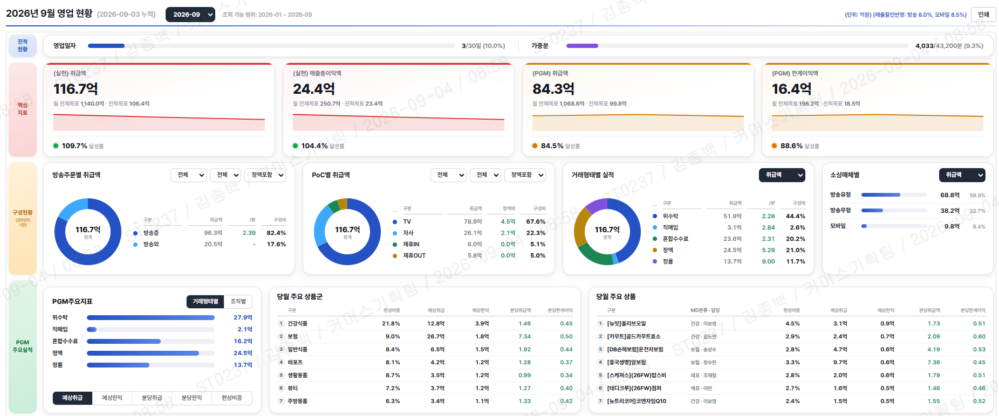

Portfolio — 2026
Seoul, KR
김종백
JONGBAEK KIM
10년+의 커머스 기획 경험과 데이터사이언스 전문성으로 성장과 수익성을 설계합니다.
숫자로 회사를 읽고, 계획으로 실행을 만드는 경영기획 담당자입니다.
현업의 문제를 AI로 풀어 손익으로 증명하는 AX 추진 담당자입니다.
View as — 지원 직무 선택
01
Profile
커머스 산업에서 경영계획·손익관리와 AI 기반 프로세스 혁신을 모두 수행해 왔습니다. 계획을 세우는 사람이 직접 데이터로 검증하고, 기술 도입의 성과를 손익으로 연결합니다.
연간 경영계획과 중장기 전략 수립, 예산 편성, BM별 관리손익 운영과 전사 KPI 거버넌스를 주도했습니다. 법인 설립부터 공시까지, 계획–실행–평가 사이클 전체를 경험했습니다.
데이터사이언스 석사 전문성을 바탕으로 AI 개인화 방송, 수요 예측 콜센터 최적화, 한계이익 예측 모델을 직접 기획·도입했습니다. 기술이 아닌 손익 개선 관점에서 AX를 추진합니다.
10+y커머스 사업·경영기획
M.S.데이터사이언스 석사
+4%AI 개인화 연 매출 기여
-70%수동업무 감축 (PI)
02
Competency
경영계획·중장기 전략
BM별 관리손익·예산
전사 KPI 거버넌스
공시(IR)·법인 설립
AI 개인화·추천 기획
수요 예측 모델 도입
프로세스 혁신(PI)
Python · SQL
03
Career
2019.12 — 현재

SK스토아
매니저 · 경영기획 / 커머스기획 / 편성기획
- 경영계획·손익 — 연간 계획·중장기 전략 수립, 예산 편성, BM별 관리손익 운영 및 수익성 과제 도출
- 성과 관리 — 전사·팀별 KPI 기준 설계, 평가·보상 연계, ESG 성과 관리
- AI 개인화 방송 — 고객 데이터 기반 개인화 송출 도입 연 +4% 매출 · 포트폴리오 +20%
- 콜센터 수요 예측 — AI 예측 기반 인력 배치로 상담 비용 절감 응답률 개선
- 차세대 방송 시스템 — 한계이익 예측 모델·To-Be 프로세스 설계 수동업무 -70%
2015.03 — 2019.12

공영홈쇼핑
대리 · 편성전략 / 법인설립추진단
- 법인 설립 — 창립 멤버로 인허가·초기 운영 체계 구축, 대통령 참여 '브랜드 K'·'같이펀딩' 등 국가 단위 프로젝트 리딩
- 데이터 편성 — 카테고리·시즌·시간대 데이터 분석 기반 생방송 편성 전략 수립, 경험 의존 방식 탈피
2012.01 — 2013.07

한국공항 (KAS)
사원 · 경영지원
- 사업계획·공시(IR) — 실적 분석 및 분기·반기·감사보고서 공시 수행, 무결점 공시로 신뢰도 유지
- 관리손익 분석 — 공항별 손익 분석으로 계약 방향성 수립 기여
04
Key Projects

AX추진End-to-End 개발
영업일보 자동화 대시보드
DW(Redshift) 실적 데이터를 Python 파이프라인으로 추출·집계하고 클라우드로 서빙하는 일일 영업 리포팅 체계를 직접 설계·개발했습니다. 당월 현황, PGM 실적, 확정 마감 등 7종 보고서를 단일 대시보드로 통합했습니다.
성과 — 수기 리포팅 전 과정 자동화 · 실적/달성율 일 단위 조회

AX추진
고객 데이터 기반 AI 개인화 방송
일률 송출의 한계를 넘어 고객 세그먼트별 최적 상품을 매칭하는 개인화 정책·송출 모델을 설계했습니다.
성과 — 연 +4% 매출 · 상품 포트폴리오 +20%

AX추진비용절감
AI 수요 예측 콜센터 최적화
콜 인입 핵심 변수를 분석해 '상담원 최적 배치 추천 테이블'을 기획, 경험 의존 인력 운영을 데이터 기반으로 전환했습니다.
성과 — 연간 상담 비용 절감 · 콜 응답률 개선

AX추진전략
차세대 방송 시스템 구축 (PI)
방송 판매 전 과정의 병목을 분석해 To-Be 프로세스를 재설계하고, '예상 한계이익' 예측 모델을 도입했습니다.
성과 — 수동업무 -70% · 수익성 중심 편성 체계

경영기획
국가 단위 커머스 이벤트 총괄
창립 멤버로 정부·공공기관 연계 프로젝트(대통령 참여 '브랜드 K' 론칭, '같이펀딩')를 리딩했습니다.
성과 — 공공 상징성 확보 · 완판 기록
05
Analytics Work
2026
2025
2024
06
Education · License
서강대학교 AI·SW대학원
데이터사이언스 석사
한국외국어대학교
법학 학사
빅데이터분석기사
한국데이터산업진흥원
ADsP · SQLD
한국데이터산업진흥원